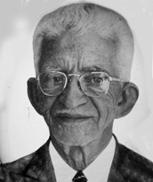

Nascido em 30 de novembro de 1905, em Porto Nacional, foi político, jornalista, literato e um dos pioneiros na luta pela criação do Estado do Tocantins. Formado em Farmácia e Bioquímica em Ouro Preto/MG (1930), foi vereador e prefeito de Porto Nacional (1940–1944), destacando-se por implementar o serviço de luz elétrica e apoiar a exploração dos garimpos locais.
Fundador da Associação Tocantinense de Imprensa (ATI) e de jornais como A Norma (1953), defendeu com firmeza a separação do norte goiano. Também editou diversos periódicos voltados ao desenvolvimento regional. Foi membro da Associação Brasileira de Imprensa (ABI).
